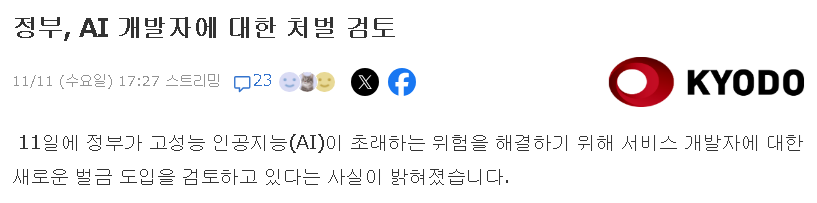

https://news.yahoo.co.jp/articles/cb539644cf4fba9fc7b7d2868b185de7d4269a74
앞으로 일본내에서 서비스되는 AI 사업자에게 안전 확보 의무를 부과하고,
필요할 경우 정부가 강제력 있는 명령도 내리고,
이를 위반할 경우 벌칙을 적용하는 방안을 일본 정부 차원에서 검토중이다.

https://news.yahoo.co.jp/articles/cb539644cf4fba9fc7b7d2868b185de7d4269a74
앞으로 일본내에서 서비스되는 AI 사업자에게 안전 확보 의무를 부과하고,
필요할 경우 정부가 강제력 있는 명령도 내리고,
이를 위반할 경우 벌칙을 적용하는 방안을 일본 정부 차원에서 검토중이다.
우리도 비슷하게 갈까봐 무섭다
한 1,2년 전만해도 일본이 AI에 뒤쳐져서 규제 최대한 없이 AI 사업자 지원한다고 했던 거 같은데...
하긴 성능 올라오면 규제가 자연스럽긴한데
팡숀??? 사용하지 마십시오
임마들은 뭐 만든게 있다고
사카나ai
나름 존나 물고빨고함
웃긴건 창업자들 셋중 둘이 외국인
링크들어가보니 와 구글 사이트번역도 진짜 좋아졌네
보안 개털리는 중이라 경계심이 들만 해
벌금 때리기 전에 국가에서 연산력이라도 제공하는게 먼저지 싶긴 하다만
아니야...ai 개발업자한테 가이드 라인 만들라고 한거야. 털릴만한 애들한테 자구책을 만들라고 한게 아니라
AI 업자들끼리도 의견이 다를텐데 조율하느라 힘들겠구만
국유화 스텝 들어가는 것
저건 맞는거 아닌가?
처맞는것
갈라파고스나 팡숀 거리는 애들은 ai 해킹으로 잔고 털어가도 좋은가봐?
미국이 클로드 위험하다고 ㅈ팬거랑 같은거 아닌지?
오쓉 제대로 역행하기로 하네
너네는 좀 써라
사이버펑크 세계관에서 미래는 일본 기업이 장악하고 기술발전을 하는것 처럼 그려지고 있지만
실제로 일본은 아날로그한 사회로 머물기를 원하는것같고 한국도 IT 기술발전에는 약간 조심성이 있는것같고
아이러니 하게도 강력한 통제 국가인 중국이 혁신적이고 위험한 IT 기술에 개방적임;;
일본은 회생불가 이고 중국은 강제 이니시로 초반 치고 나가는건 확실한데 독재는 한계가 있음. 반면 한국이 후반 세련되게 AI 국가로 발돋음 할것같다.
유럽이 먼저 AI 규제 시동 걸었고 미국도 민주당 쪽이 그런 움직임 보이는데
일본도 해킹 문제로 리스크가 수면 위로 떠올랐으니 명분은 섰고 스텝 맞추는거지
역시 중세 갈라파고스 답네ㅋㅋㅋㅋㅋ